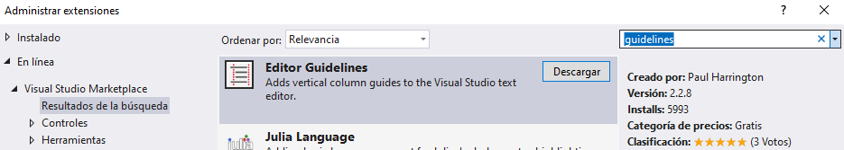
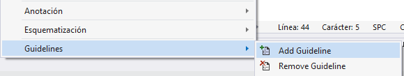
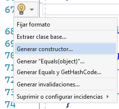
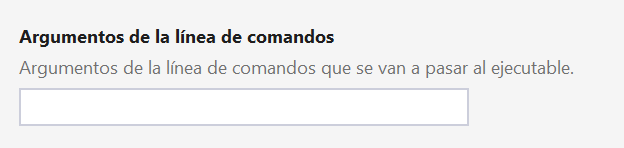

<!DOCTYPE html>
<html lang="es">
	<head>
		<meta charset="utf-8">
		<title>Introducción a las clases y objetos</title>
		<meta name="viewport" content="width=device-width, initial-scale=1.0">
		<link rel="stylesheet" href="../../../reveal/dist/reveal.css">
		<link rel="stylesheet" href="../../../reveal/dist/theme/white.css" id="theme">
		<link rel="stylesheet" href="../../../reveal/plugin/highlight/custom.css">
	</head>

	<body>
		<div class="reveal">
			<div class="slides">
                <section data-markdown>
<script type="text/template">
## Programación orientada a objetos
#### Algunos trucos de uso de Visual Studio
</script>
</section>

<section data-markdown>
<script type="text/template">
## Marcador de líneas largas (1/2)

Instalar la extensión "Editor guidelines" (menú *Extensiones* - *Administrar extensiones*), y reiniciar Visual Studio después

<div align="center">
    
</div>

</script>
</section>

<section data-markdown>
<script type="text/template">
## Marcador de líneas largas (1/2)

Hacer clic derecho en el número de columna en el editor y elegir *Guidelines - Add Guideline* en el menú contextual

<div align="center">
    
</div>

</script>
</section>
    
<section data-markdown>
<script type="text/template">
## Generación de código

Pulsar *Alt* + *Enter* en la zona donde queramos generar el código. Podemos generar constructores y algún que otro método secundario

<div align="center">
    
</div>

</script>
</section>
    
<section data-markdown>
<script type="text/template">
## Atajos de teclado útiles

* **Ctrl + D**: duplicar línea de código actual
* **Ctrl + K + C**: comentar líneas de código seleccionadas
* **Ctrl + K + U**: descomentar líneas de código seleccionadas
* **Alt + Arriba** / **Alt + Abajo**: mover arriba/abajo la línea de código actual

</script>
</section>

<section data-markdown>
<script type="text/template">
## Refactorizar código

Para cambiar el nombre de una variable o clase en todo el código del proyecto:

* Seleccionamos el nombre de esa variable o clase
* Clic derecho, y elegimos *Cambiar nombre*
* Cambiamos nombre y se aplica a todo el código

</script>
</section>

<section data-markdown>
<script type="text/template">
## Pasar parámetros al Main (*args*)

- Menú *Depurar* - *Propiedades de depuración*
- Pasar los parámetros en el cuadro "Argumentos de línea de comandos"

<div align="center">
    
</div>

</script>
</section>

            </div>
		</div>

		<script src="../../../reveal/dist/reveal.js"></script>
		<script src="../../../reveal/plugin/zoom/zoom.js"></script>
		<script src="../../../reveal/plugin/markdown/markdown.js"></script>
		<script src="../../../reveal/plugin/highlight/highlight.js"></script>
		<script>

			// Also available as an ES module, see:
			// https://revealjs.com/initialization/
			Reveal.initialize({
				controls: false,
				progress: false,
				center: true,
                hash: true,
                width: "80%",

				// Learn about plugins: https://revealjs.com/plugins/
				plugins: [ RevealZoom, RevealMarkdown, RevealHighlight ]
			});

		</script>

	</body>
</html>
